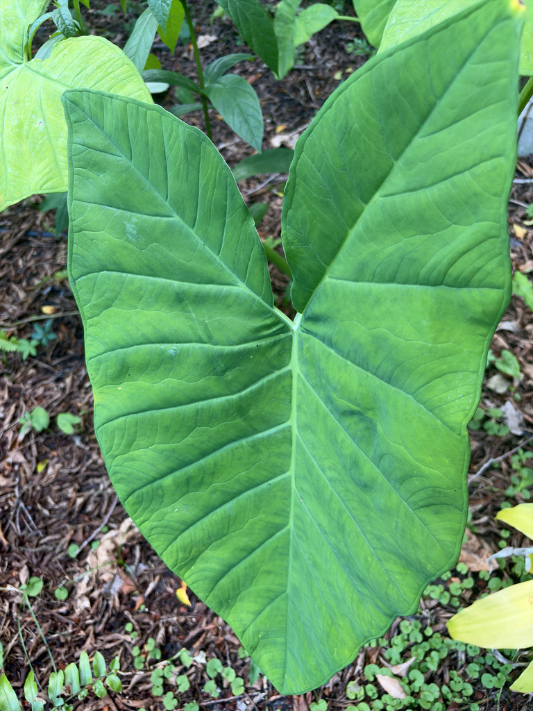

- Those enormous leaves — up to six feet long — are actually a food crop for roughly 400 million people around the world. The starchy underground corm is boiled, roasted, or fried much like a potato, and the leaves are cooked as a green.
- Tannia reached West Africa aboard slave ships in the 16th or 17th century. Today Africa is the world's leading producer, and the crop is so well established there that it is known as 'new cocoyam' — to distinguish it from the older, Asian-origin taro that came first.
- Pollination here is a nighttime affair: Xanthosoma species heat their flower spike through internal thermogenesis and release a sweet scent at dusk to draw in scarab beetles, which spend the night inside the spathe and carry pollen out with them at dawn.
- It looks nearly identical to taro (Colocasia esculenta), but there is a quick way to tell them apart: on elephant's ear, the leaf stalk attaches right at the bottom notch of the leaf; on taro, it meets the blade a few inches up from that notch, like an umbrella handle.
Arrowleaf elephant's ear is native to tropical Central and South America — most likely originating in the northern Andes region, spanning modern-day Colombia, Venezuela, Ecuador, and Peru, though its exact wild range is obscured by millennia of cultivation. People were growing and selecting it long before written history, cooking the corms to remove their natural bitterness.
The plant's global spread is a story of human movement. It crossed the Atlantic during the slave trade era, arriving in West Africa as early as the 16th or 17th century, and spread further to Southeast Asia and the Pacific by the 19th century.
It came to Florida as an ornamental and food-crop planting, particularly valued by Caribbean and Latin American communities, and has since escaped cultivation into moist disturbed areas across the peninsula.
- The corm at the base of the plant is the main edible part, but the plant doesn't stop there. It produces a ring of smaller lateral corms — usually ten or more — each 10 to 25 cm long, and it does so quickly: a plant can go from corm to full foliage and a new generation of corms in under a year. That productivity is a big part of why the crop has spread so successfully across tropical regions.
- The leaves earn the 'elephant's ear' name honestly. Each one is light green, broadly arrow-shaped, and can reach six feet in length on petioles of similar length — the whole plant pushing toward nine feet tall in good conditions. The leaf surface sheds water cleanly, a trait that has made the plant a subject of research into water-repellent surfaces.
- In Florida's warm, moist conditions, this plant is a vigorous grower that can move beyond gardens into ditches, canal banks, and disturbed wetland edges. That combination of fast growth, prolific corm production, and tolerance of shade and wet soils is what put it on the FISC invasive species list for the entire state.
In its native range, the inflorescences of Xanthosoma are pollinated by dynastine scarab beetles — particularly Cyclocephala species. At dusk the flower spike generates internal heat through thermogenesis and releases a sweet scent; beetles arrive, spend the night feeding on sterile tissue inside the spathe, pick up pollen, and carry it to the next open inflorescence.
It is an intimate, nocturnal partnership typical of the aroid family.
In Florida cultivation, the plant provides dense structural cover that small wildlife may use, but it offers limited documented value as a food plant for native pollinators or wildlife. Its obligate scarab-beetle pollinators are not present here in the same ecological context, and no native Florida butterflies or moths are known to use it as a larval host.
The primary means of reproduction in cultivation and in the wild. The main corm produces ten or more lateral cormels via short rhizomes; each cormel can give rise to a new plant. A single established clump can expand rapidly, which is the main driver of its invasive spread in Florida.
The inflorescence emerges below the leaf canopy and consists of a pale green spathe about 20 cm long enclosing a spadix. Female flowers occupy the lower portion of the spadix, male flowers the upper. Many cultivated plants rarely flower; seed production in Florida is uncommon.
In its native range, pollination is carried out by dynastine scarab beetles (Cyclocephala spp.) at night. The inflorescence produces heat and releases a sweet fragrance at dusk to attract these pollinators, which spend up to 24 hours inside the spathe before departing with pollen.
Large, arrow-shaped, light green, with long petioles attached directly at the base of the leaf blade — the key distinction from the peltate-leafed taro (Colocasia esculenta). Blades can reach 50 to 75 cm long, occasionally more; petioles roughly equal in length.
The central corm is flask-shaped, typically 15 to 25 cm long, with rough brown skin. It produces numerous smaller lateral cormels. All parts contain calcium oxalate crystals in their raw state.
The sheer scale of the foliage is the first thing you notice — leaves the size of small surfboards on equally long stalks, emerging in a dense clump from ground level.
Check the leaf attachment: the petiole meets the blade right at the bottom notch of the arrow, flush at the base. That detail separates it from taro at a glance. If the plant is flowering, look low in the canopy for a pale green, hooded spathe pointing upward among the leaf stems. Dig gently at the base and you'll find a rough-skinned corm with smaller cormels radiating outward on short rhizomes.
All parts of this plant contain calcium oxalate crystals — needle-like structures that cause immediate burning and swelling of the mouth and throat if eaten raw. The same crystals can irritate skin during handling, so gloves are worthwhile when working with cut material. Corms and leaves are traditional food crops across the tropics, but only after thorough cooking, which breaks down the oxalate.
Do not eat any part raw, and keep children and pets away from the foliage and corms. If a pet chews on the plant, expect oral irritation and drooling; contact a vet if symptoms persist.
Arrowleaf elephant's ear is easily confused with wild taro (Colocasia esculenta), another large-leafed Araceae that is itself a FISC Category I invasive in Florida.
The fastest field distinction: elephant's ear petioles attach at the very base of the leaf notch; taro petioles attach a few inches up from the notch into the blade surface (peltate). Elephant's ear leaves are also typically lighter green.
The genus name Xanthosoma means 'yellow body' in Greek, a reference to the yellowish interior tissue of the corm.


- © Ruby Meador (CC-BY-NC), via iNaturalist
- © Randall Carter (CC-BY-NC), via iNaturalist